4 Preprocesado de datos.
4.1 DAA. Exploratory Data Analysis.
En esta primera etapa, se va a estudiar posibles relaciones entre las distintas variables para así encontrar aquellas que aporten mayor información en el modelo. Primeramente, se hace con las 5 primeras.
## Warning: package 'psych' was built under R version 4.0.5##
## Attaching package: 'psych'## The following objects are masked from 'package:ggplot2':
##
## %+%, alpha## The following objects are masked from dataSet:
##
## age, campaign, cons.conf.idx, cons.price.idx, contact, day_of_week,
## default, duration, education, emp.var.rate, euribor3m, housing,
## job, loan, marital, month, nr.employed, pdays, poutcome, previous,
## y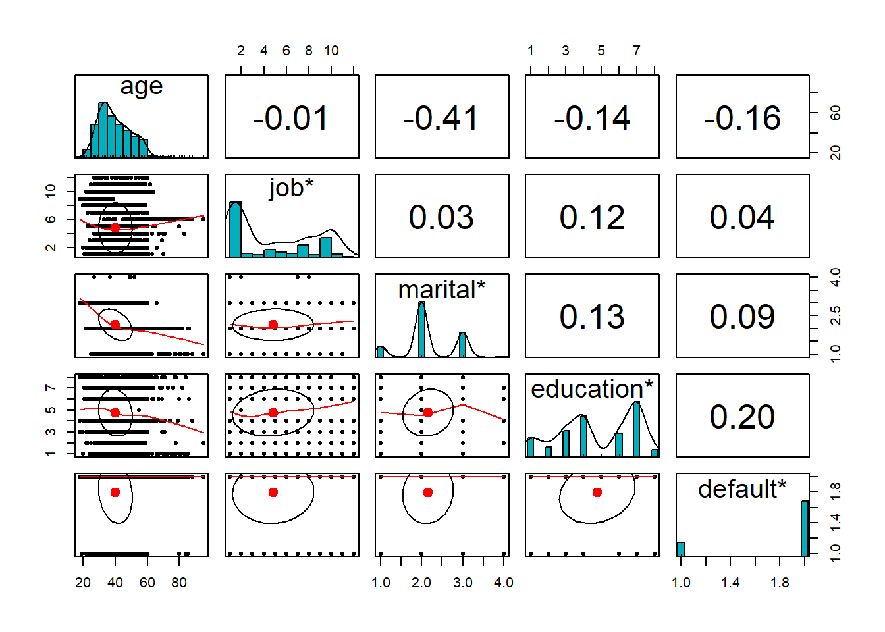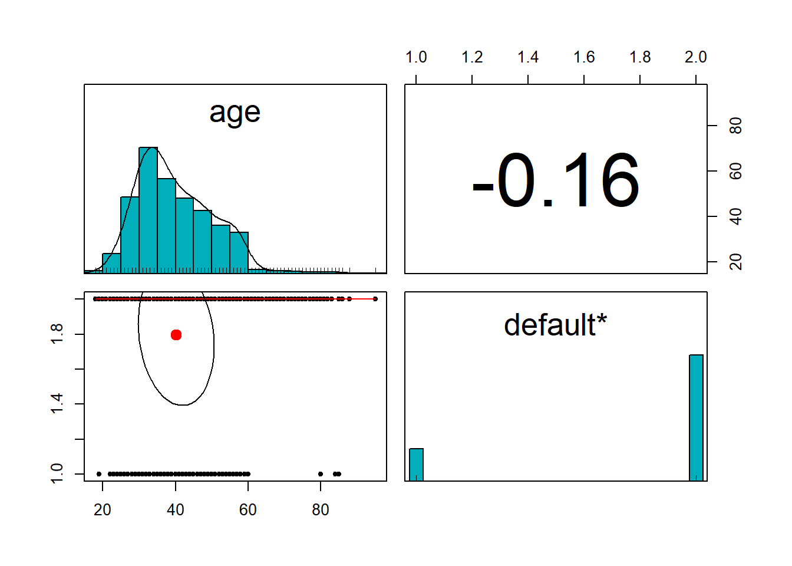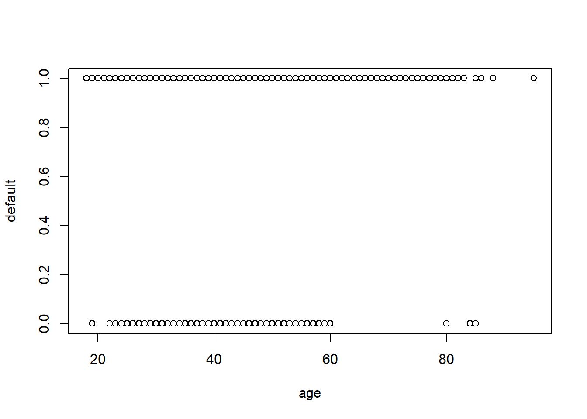 En este primer gráfico se observa cierta importancia de la variable edad sobre el resto. En el segundo se ve que los menos de 60 años son mas reacios a dar informacion de si tienen credito personal en incumplimiento o no
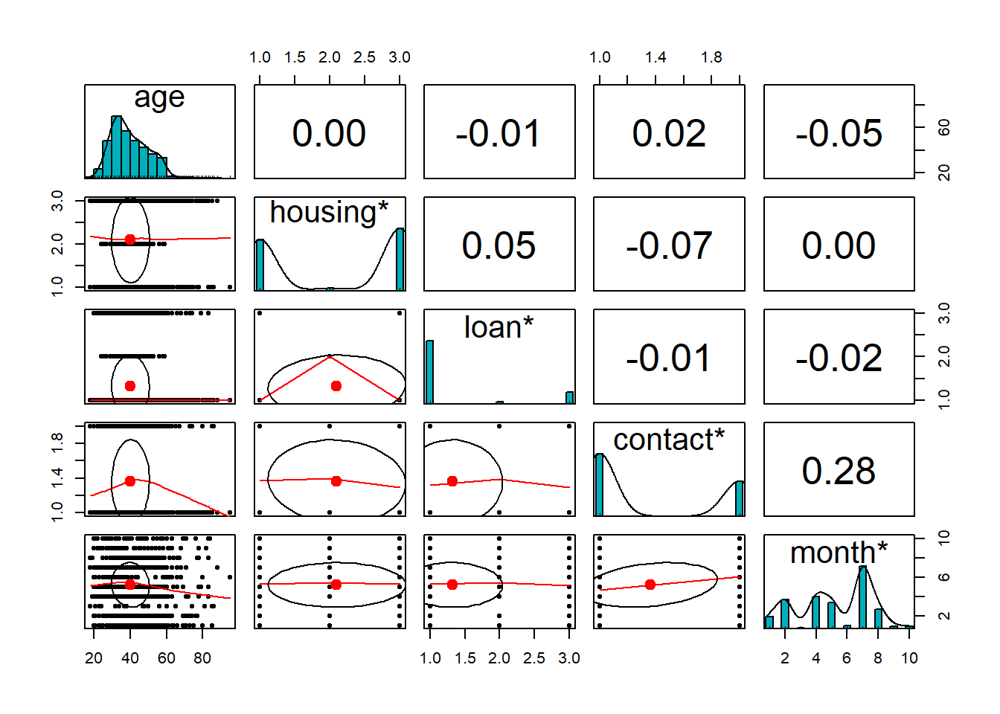
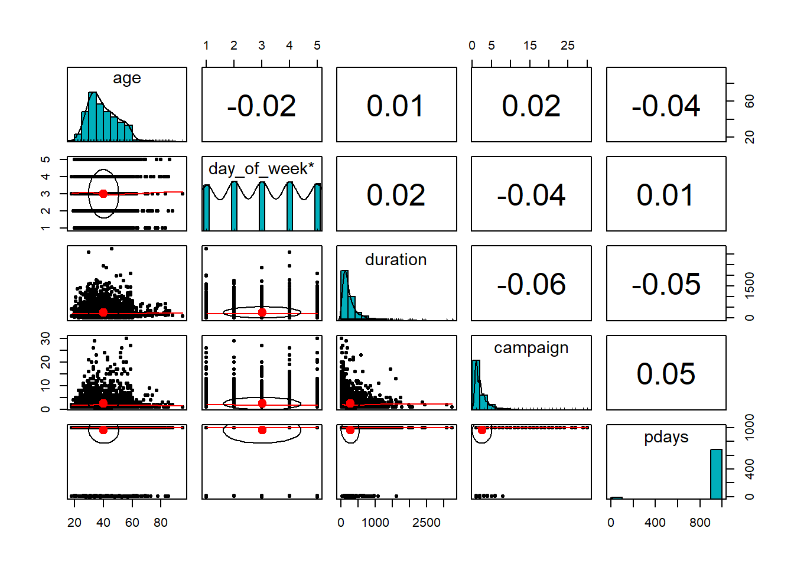
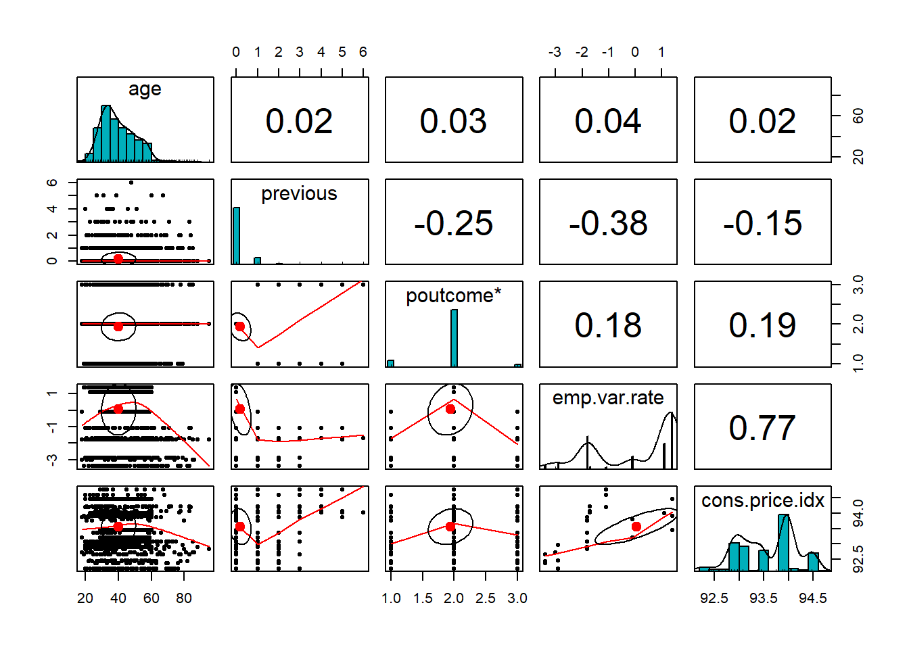
pairs(dataSet_train[,c(1,11)])
attach(dataSet_train)## The following objects are masked from dataSet_train (pos = 3):
##
## age, campaign, cons.conf.idx, cons.price.idx, contact, day_of_week,
## default, duration, education, emp.var.rate, euribor3m, housing,
## job, loan, marital, month, nr.employed, pdays, poutcome, previous,
## y## The following objects are masked from dataSet:
##
## age, campaign, cons.conf.idx, cons.price.idx, contact, day_of_week,
## default, duration, education, emp.var.rate, euribor3m, housing,
## job, loan, marital, month, nr.employed, pdays, poutcome, previous,
## yduration = NULL
summary(duration)## Length Class Mode
## 0 NULL NULL sapply(dataSet_train, class)## age job marital education default
## "integer" "character" "character" "character" "character"
## housing loan contact month day_of_week
## "character" "character" "character" "character" "character"
## duration campaign pdays previous poutcome
## "integer" "integer" "integer" "integer" "character"
## emp.var.rate cons.price.idx cons.conf.idx euribor3m nr.employed
## "numeric" "numeric" "numeric" "numeric" "numeric"
## y
## "character" sapply(dataSet_train, mode)## age job marital education default
## "numeric" "character" "character" "character" "character"
## housing loan contact month day_of_week
## "character" "character" "character" "character" "character"
## duration campaign pdays previous poutcome
## "numeric" "numeric" "numeric" "numeric" "character"
## emp.var.rate cons.price.idx cons.conf.idx euribor3m nr.employed
## "numeric" "numeric" "numeric" "numeric" "numeric"
## y
## "character"attach(dataSet_train) ## The following object is masked _by_ .GlobalEnv:
##
## duration## The following objects are masked from dataSet_train (pos = 3):
##
## age, campaign, cons.conf.idx, cons.price.idx, contact, day_of_week,
## default, duration, education, emp.var.rate, euribor3m, housing,
## job, loan, marital, month, nr.employed, pdays, poutcome, previous,
## y## The following objects are masked from dataSet_train (pos = 4):
##
## age, campaign, cons.conf.idx, cons.price.idx, contact, day_of_week,
## default, duration, education, emp.var.rate, euribor3m, housing,
## job, loan, marital, month, nr.employed, pdays, poutcome, previous,
## y## The following objects are masked from dataSet:
##
## age, campaign, cons.conf.idx, cons.price.idx, contact, day_of_week,
## default, duration, education, emp.var.rate, euribor3m, housing,
## job, loan, marital, month, nr.employed, pdays, poutcome, previous,
## ysummary(age)## Min. 1st Qu. Median Mean 3rd Qu. Max.
## 18.00 32.00 38.00 40.16 47.00 95.00hist(age)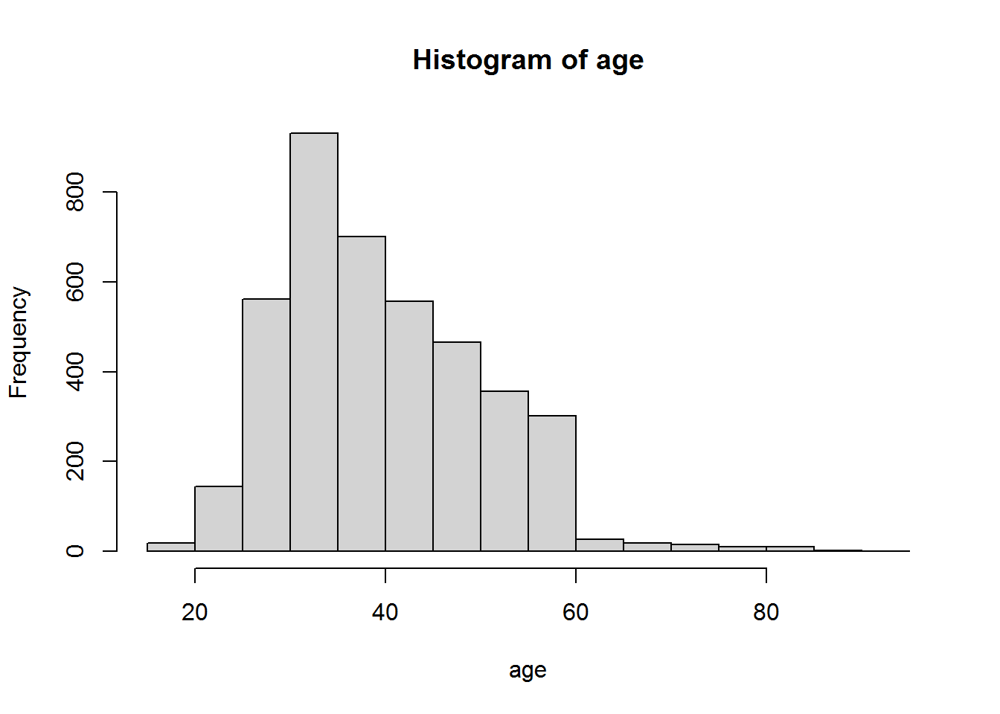
table(age)## age
## 18 19 20 21 22 23 24 25 26 27 28 29 30 31 32 33 34 35 36 37
## 3 2 13 10 13 25 49 47 59 98 89 141 175 187 163 184 192 204 163 142
## 38 39 40 41 42 43 44 45 46 47 48 49 50 51 52 53 54 55 56 57
## 151 129 115 125 128 84 112 108 105 99 103 84 74 74 75 69 71 67 85 73
## 58 59 60 61 62 63 64 65 66 67 68 69 70 71 72 73 74 75 76 77
## 59 57 27 4 5 11 6 1 6 2 3 5 3 6 3 3 2 1 2 2
## 78 79 80 81 82 83 84 85 86 88 95
## 4 1 2 1 1 4 1 3 1 1 1table(age<50)/dim(dataSet[1])*100##
## FALSE TRUE
## 1.98116e+00 3.30200e+05table(age<0,campaign)## campaign
## 1 2 3 4 5 6 7 8 9 10 11 12 13 14
## FALSE 1746 1035 550 286 171 111 45 41 32 25 18 9 8 3
## campaign
## 15 16 17 18 19 20 21 22 23 24 26 27 29 30
## FALSE 7 5 6 2 1 5 2 2 1 2 2 1 1 1table(age<50)/dim(dataSet[1])*100##
## FALSE TRUE
## 1.98116e+00 3.30200e+05table(age>0,campaign)## campaign
## 1 2 3 4 5 6 7 8 9 10 11 12 13 14
## TRUE 1746 1035 550 286 171 111 45 41 32 25 18 9 8 3
## campaign
## 15 16 17 18 19 20 21 22 23 24 26 27 29 30
## TRUE 7 5 6 2 1 5 2 2 1 2 2 1 1 1chisq.test(table(age,campaign))## Warning in chisq.test(table(age, campaign)): Chi-squared approximation may be
## incorrect##
## Pearson's Chi-squared test
##
## data: table(age, campaign)
## X-squared = 1304.7, df = 1890, p-value = 1##Nos interesa si es mayor o menor que 0.05
mean(dataSet[campaign==0,]$age)## [1] NaN#ggplot(data=dataSet, aes(age)) +
# geom_density()+
#ggtitle("Función de densidad de la variabel age")4.2 Correlación de las variables
Estudiamos la correlación entre las variabels explicativas y la variable respuesta ### Age: 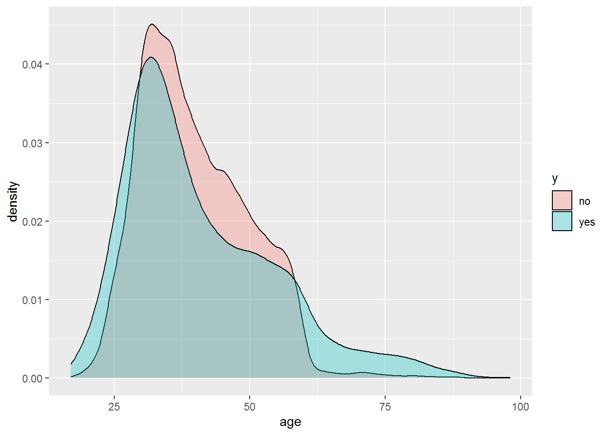
Realizamos un contraste de hipótesis (t.test) para comprobar si hay diferencias significativas entre los dos puntos de interés:
#as.numeric(y)
#t.test(age-y)Se puede concluir que la variable *Age es …
4.2.1 Duration
## The following object is masked _by_ .GlobalEnv:
##
## duration## The following objects are masked from dataSet_train (pos = 3):
##
## age, campaign, cons.conf.idx, cons.price.idx, contact, day_of_week,
## default, duration, education, emp.var.rate, euribor3m, housing,
## job, loan, marital, month, nr.employed, pdays, poutcome, previous,
## y## The following objects are masked from dataSet_train (pos = 4):
##
## age, campaign, cons.conf.idx, cons.price.idx, contact, day_of_week,
## default, duration, education, emp.var.rate, euribor3m, housing,
## job, loan, marital, month, nr.employed, pdays, poutcome, previous,
## y## The following objects are masked from dataSet_train (pos = 5):
##
## age, campaign, cons.conf.idx, cons.price.idx, contact, day_of_week,
## default, duration, education, emp.var.rate, euribor3m, housing,
## job, loan, marital, month, nr.employed, pdays, poutcome, previous,
## y## The following objects are masked from dataSet:
##
## age, campaign, cons.conf.idx, cons.price.idx, contact, day_of_week,
## default, duration, education, emp.var.rate, euribor3m, housing,
## job, loan, marital, month, nr.employed, pdays, poutcome, previous,
## y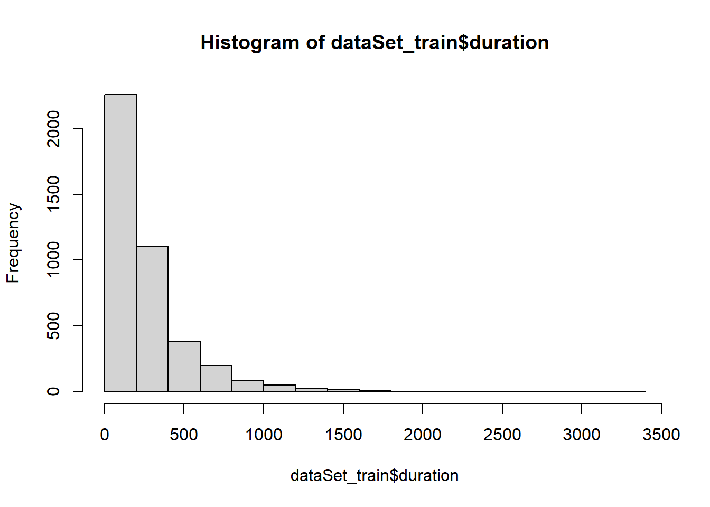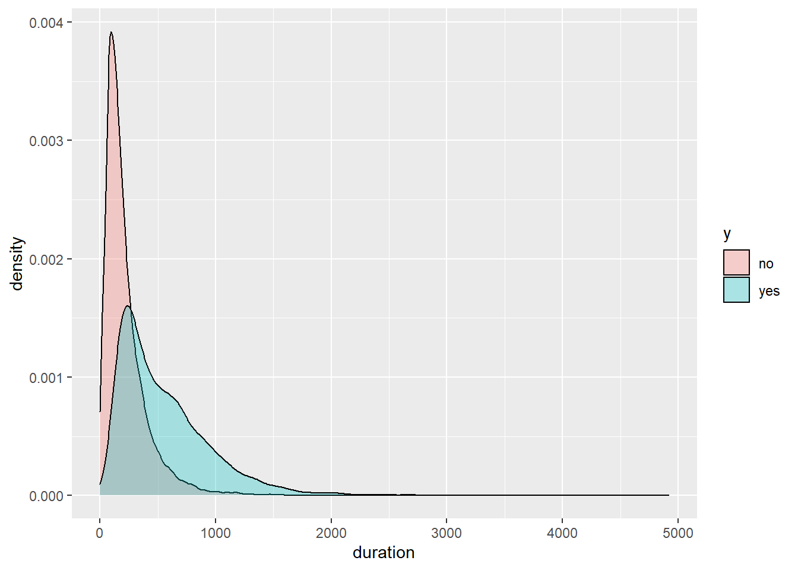
## Min. 1st Qu. Median Mean 3rd Qu. Max.
## 3.0 103.0 179.5 262.4 327.8 3253.0## Warning in chisq.test(table(dataSet_train$duration, dataSet_train$y)): Chi-
## squared approximation may be incorrect##
## Pearson's Chi-squared test
##
## data: table(dataSet_train$duration, dataSet_train$y)
## X-squared = 2017, df = 849, p-value < 2.2e-164.3 Transformación de variables
Aparentemente hay valores o que corresponden a mujeres que no se les tomó esta medida
hist(age)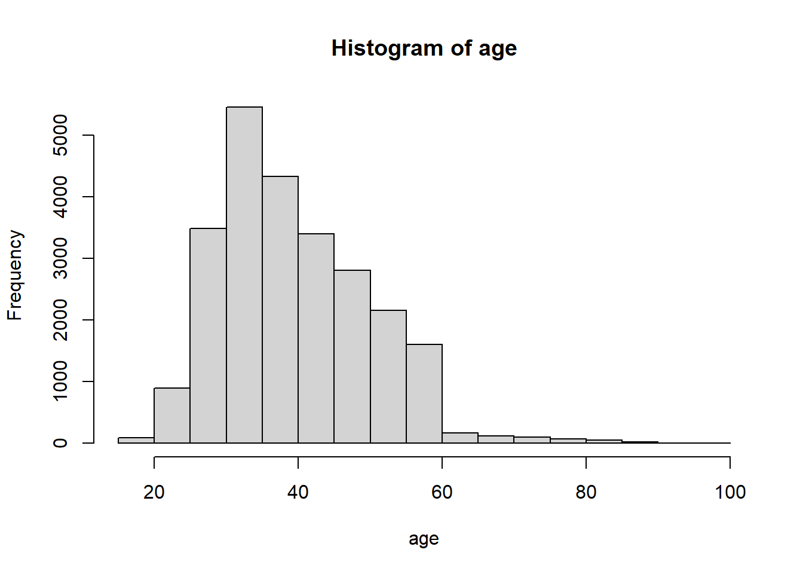
age_cat= cut(age,c(-1,0.1,20,40,1000),labels=c("NS/NC","Bajo","Medio","Alto"))
table(age_cat,y)## y
## age_cat no yes
## NS/NC 0 0
## Bajo 10 8
## Medio 2042 294
## Alto 1566 198chisq.test(table(age_cat,y))## Warning in chisq.test(table(age_cat, y)): Chi-squared approximation may be
## incorrect##
## Pearson's Chi-squared test
##
## data: table(age_cat, y)
## X-squared = NaN, df = 3, p-value = NAHemos transformado la variable, categorizándola en 4 niveles. La nueva variable resulta ser estadísticamente significativa. Es decir, es una variable que debemos teener en cuaneta e la construcción de los modelos de Machine Learning.